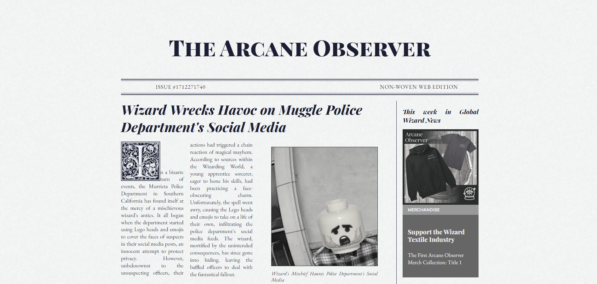
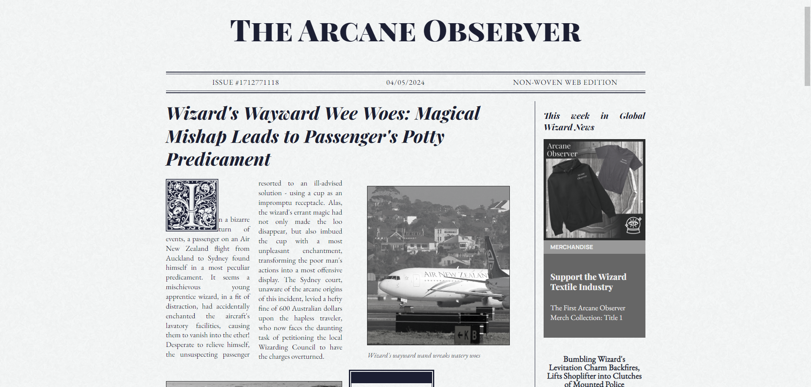
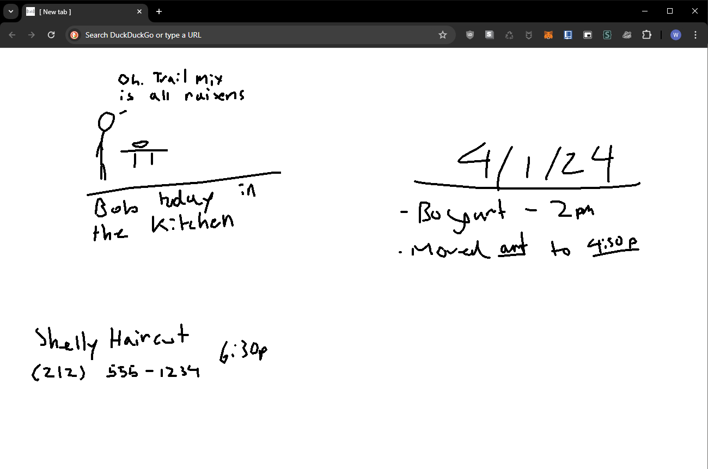
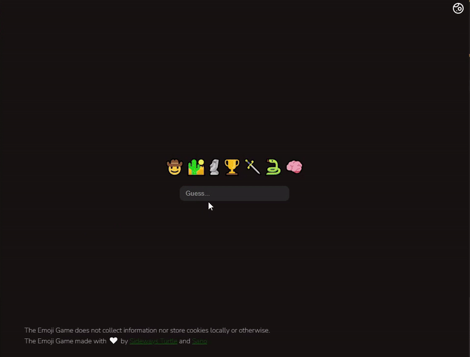
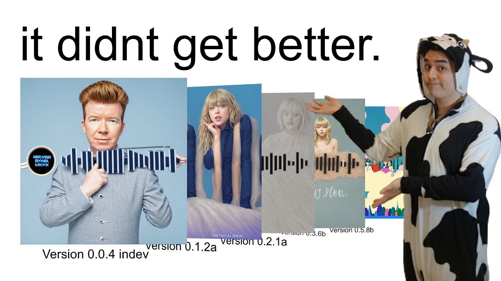

Games


Coot's Bug Squasher
Video Game, Narrative, Puzzle, Coding
A hacking game about a cat, whom hacks by putting themselves into computers to get through security measures.
The player has to help the cat named Coots reach the portals to dive deeper into the code.
It utilizes my own toylang† called AlphaJargon inside of Unity.
† toy language, a non-serious programming language usually made as a toy


Adventure of Sir Robin
Video game, Adventure, Narrative
An adventure game about a magically intelligent bag.
The twist? It turns out that the bag’s intelligence was the player all along.
The player frantically search for what the bag owner needs to try their hardest not to be thrown away.

Intern
Video game, Mini-games
A god game where the player has to fix the mistakes of a bumbling intern, before the stress gets to them and starts fracturing the world around them.


Productivy App
(work in progress)
Video game, Narrative
A meta-narrative walking simulator about productivity, artistic expression and the toxic battle within ourselves.
Inspired heavily by Clint Hocking’s idea of ludonarrative dissonance.


Corruption
Video game, Management
A swiping management game where the player is a dictator and has to decide if they should sell off the newly declared country to capitalists or not.
I ran out of time during the game jam and was unable to create a suitable ending.

Curling The Herd
Video game, Top-down
My first game jam submission.
A game about a curling pro slime being mistakenly hired by a fox to destroy murderous sentient hockey goals by scoring in them.
Websites


The Arcane Observer
Newspaper, Fantasy Narrative
Website -

A self updating magic newspaper that takes the top oddities of the day from AP and explains them away with wizard activities.
Scrapes the top stories from AP Oddities and feeds them into an Anthropic’s Claude 3 Model.

[ new tab ] - Doodle
Productivity, Art, Drawing
Source Code -

The Doodle version of [ new tab ] a line up of productivity apps I am making for the new tab screen of the chrome browser hijacking it with a Chrome extension.
I made it because I was always tired of being on a call and having to say “I’m sorry do you mind if I get a pen?”
This way I always have a place to jot something down so I can stay engaged in digital conversation, without the noise of typing from my mechanical keyboard.

Emoji Game
(Archived)
Web Game
Source Code -
An AI powered emoji movie name guessing The game. Gives the user a couple emojis and the user has to guess what the movie the AI is thinking of.
ExNoto
Website Template
A landing page which serves as a mock up for a potential AI translator app or other SaaS project
Programs
VOD Highlighter
Machine Learning, BERT
Source Code -
Originally an AI program trained on important keywords with BERT to cut down boring lectures from online university, turned tool to create highlights of long streams.
I reworked the tool to change the underlying model to a self trained BERT model to a cloud GPT solution.
(Check branch history for the old BERT version if needed.)
David The Duck
Desktop Pet
Source Code -
A desktop pet that waddles around your screen and gets into mischief.
Heavily inspired by Desktop Goose.
This was my 20th birthday present to my best friend, inspired by her drawing of a duck named David.
Videos

Sano Fails to Sell Spotify™ Tattoos
AI Art, Satire
A satirical video about a cash cow trying to use AI art to benefit themselves, and in the process understanding a little bit about what’s underneath instead.
I developed a whole website for the video, but the part that took the longest was trying to figure out what the video actually was.
Board Games
Merlin Economics
Hand Management, Commodity Speculation, Blind Auctioning, Economics
A board game that takes real world economic principles and applies them to a fictional Wizard world.
Fortune telling cards are played every turn that may forecast future economic instability.
I wanted to make a game that teaches microeconomics.
Kanta
Hand Management, Betting, Statistics
A new two player (or house vs. players) gambling card game that adds fantasy elements to cards.
Is inspired by blackjack. I really just wanted a new card game to play with friends that was as easy as blackjack.